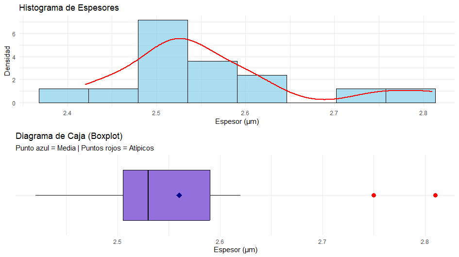

3 Estadística descriptiva
3.1 Medidas de tendencia central y posición
Las medidas de posición resumen el conjunto de datos mediante un valor numérico. Si este valor numérico se sitúa hacia el centro de la distribución se habla, entonces, de medidas de posición central. Las principales medidas de posición central son: la media, la mediana y la moda.
3.1.1 Media aritmética
Dada una variable estadística, \(X\), cuantitativa con valores \(x_1,x_2,\ldots,x_k\) y frecuencias \(n_1,n_2,\ldots,n_k\). Se define la media aritmética, y se denota por \(\bar{x}\), como: \[\bar{x}=\frac{1}{n} \sum_{i=1}^k n_i x_i\] siendo \(n\) el número total de observaciones.
3.1.2 Mediana
Se define la mediana como aquel valor de la variable estadística que divide en dos conjuntos iguales a los valores de la variable supuestos ordenados.
Se pueden dar dos situaciones:
si ningún valor \(x_i\) tiene como frecuencia relativa acumulada 0.5. Entonces, \(Me=x_i\) tal que \(F_{i-1} < 0.5 < F_i\).
si hay algún \(x_i\) que tiene como frecuencia relativa acumulada 0.5. En este caso se toma como mediana la media aritmética de los valores \(x_i\) y \(x_{i+1}\), en cuyo caso la mediana no coincidirá con ningún valor de la variable estadística. \[Me = \frac{x_{i}+x_{i+1}}{2}\]
3.1.3 Moda
La moda es aquel valor que más veces se repite. Pueden existir varias modas.
En el caso de que la variable tiene una única moda, ésta viene perfectamente definida. \[Mo=x_i\quad \text{si}\quad n_i=\max_j {n_j}\]
Cuando existe más de una moda, en general las salidas de los programas estadísticos suelen mostrar la que tiene el valor más pequeño.
3.1.4 Cuartiles y percentiles
Los percentiles son aquellos valores de la variable estadística que dividen a los valores de la variable (supuestos ordenados de forma creciente) en 100 intervalos con igual número de observaciones. Se denotan por: \(P_1,P_2,\ldots,P_{99}\). Y los cuartiles dividen a los valores en cuatro intervalos con igual número de observaciones. Se denotan por: \(Q_1,Q_2,Q_3\).
3.2 Medidas de dispersión
Las medidas de dispersión cuantifican la variabilidad de un conjunto de observaciones informando acerca de la mayor o menor representatividad de las medidas de posición.
3.2.1 Rango
Se define el rango y se denota por \(Re\), como la diferencia entre el máximo y el mínimo valor de la distribución. \[Re = \max_i x_i - \min_i x_i\]
3.2.2 Rango intercuartílico
Se define el rango intercuartílico y se denota por \(RIQ\), como la diferencia entre el tercer y el primer cuartil, por tanto, informa del rango de valores donde se encuentra el 50% central de las observaciones. \[RIQ = Q_3 - Q_1\]
3.2.3 Varianza
Se define la varianza y se denota por \(s^2\), como la media aritmética de los cuadrados de las desviaciones entre los valores de la variable estadística y la media aritmética. \[s^2 = \frac{1}{n-1} \sum_{i=1}^k n_i\left(x_i - \bar{x}\right)^2\]
3.2.4 Desviación típica
Se define la desviación típica, y se denota por \(s\), como la raíz cuadrada positiva de la varianza.
3.2.5 Coeficiente de variación
Se define el coeficiente de variación de Pearson, y se denota por \(CV\), como el cociente entre la desviación típica y la media aritmética, \[CV = \frac{\sigma}{\bar{x}}\]
Se utiliza para comparar la dispersión de dos o más distribuciones en las que las variables vienen expresadas en unidades distintas. Representa el número de veces que la desviación típica contiene a la media aritmética, por tanto, cuanto mayor sea el coeficiente de variación significa que mayor número de veces contiene la desviación típica a la media aritmética y, por lo tanto, la media aritmética es menos representativa.
3.3 Medidas de forma
Las medidas de forma describen la silueta de la distribución.
Coeficiente de asimetría: indica si los datos se agrupan más hacia un lado de la media que hacia el otro. Se define \[\gamma_1 = \frac{\mu_3}{\sigma_3}\]
Si \(\gamma_1 = 0\) la distribución es simétrica. Ambas colas son iguales (como en la campana de Gauss).
Si \(\gamma_1 > 0\) la distribución es asimétrica a la derecha. La “cola” de la distribución es más larga hacia la derecha.
Si \(\gamma_1 < 0\) la distribución es asimétrica a la izquierda. La “cola” de la distribución es más larga hacia la izquierda.

Coeficiente de curtosis: Mide qué tan “puntiaguda” o plana es la distribución, cómo es la concentración de datos en la zona central y en las colas (extremos). Se define \[\gamma_2 = \frac{\mu_4}{\sigma_4} - 3\]
Si \(\gamma_2 = 0\) la distribución se denomina mesocúrtica, igual de apuntada que la normal, formal normal.
Si \(\gamma_2 > 0\) la distribución es más apuntada que la normal, muchos datos en el centro, y se denomina leptocúrtica.
Si \(\gamma_2 < 0\) la distribución es menos apuntada que la normal, datos más dispersos, y se denomina platicúrtica.
3.4 Representaciones gráficas
Histograma: Se usa para ver la distribución de frecuencias de la variable, esto resulta de gran utilidad para detectar asimetrías, identificar la curtosis y detectar posibles valores atípicos.
Boxplot: Consiste en representar gráficamente un resumen de la distribución de datos usando sus cuartiles. Muestra la dispersión de los datos y resulta de gran utilidad en la detección de valores atípicos y asimetrías.
3.5 Ejemplo: Control de Calidad en Microelectrónica.
Se ha medido el espesor de una capa de recubrimiento de oro (en micrómetros, \(\mu m\)) depositada sobre una placa de circuito impreso mediante un proceso químico. El espesor objetivo es de 2.50 \(\mu m\). Aquí tienes los datos de 15 mediciones realizadas por un sensor de alta precisión: \[2.42, 2.45, 2.48, 2.50, 2.51, 2.52, 2.53, 2.53, 2.54, 2.56, 2.58, 2.60, 2.62, 2.75, 2.81\] Las medidas descriptivas que se obtienen en este caso son las siguientes:
3.5.1 Medidas de posición
Media: \(\bar{x} = 2.56\) \(\mu m\) (superior al objetivo de 2.50)
Mediana: \(Me = 2.53\) \(\mu m\)
Cuartiles: \(Q_1 (25\%) = 2.505\) \(\mu m\) y \(Q_3 (75\%) = 2.590\) \(\mu m\)
3.5.2 Medidas de dispersión
Rango: 2.810 - 2.420 = 0.39 \(\mu m\)
Desviación estándar: \(s\) = 0.104 \(\mu m\)
Coeficiente de variación: \(0.104/2.56 = 0.041\) \(\mu m\). Es una dispersión muy baja, lo que indica un proceso muy preciso, aunque ligeramente descentrado del objetivo.
3.5.3 Medidas de forma
Coeficiente de simetría: 1.156 \(\mu m\), presenta asimetría a la derecha. La Media (2.56) > Mediana (2.53).
Coeficiente de curtosis: 3.769 \(\mu m\), mayor apuntamiento que lo normal, es decir, la distribución es leptocúrtica. La mayoría de los espesores están muy concentrados.
3.5.4 Representaciones gráficas
Histograma y boxplot:

El proceso muestra una alta precisión en el 50% de las muestras (dentro de la caja), pero presenta una inestabilidad hacia el límite superior. El histograma confirma un sesgo positivo y el boxplot identifica dos valores atípicos en \(2.75\) \(\mu m\) y \(2.81\) \(\mu m\). Se recomienda recalibrar para centrar la mediana en \(2.50\) y reducir el desperdicio de material.